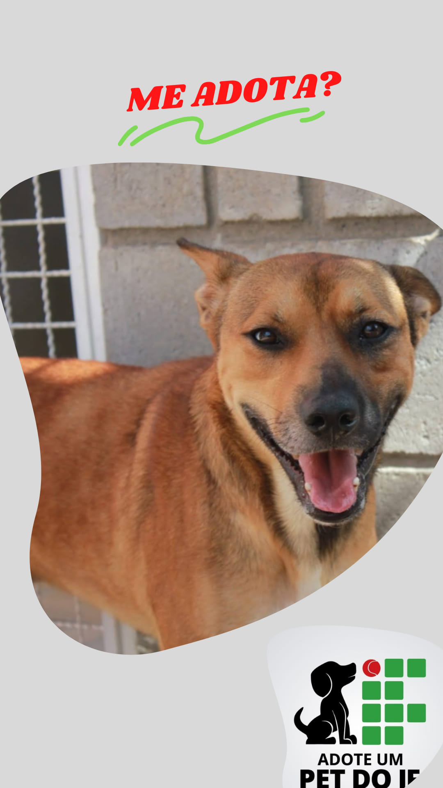
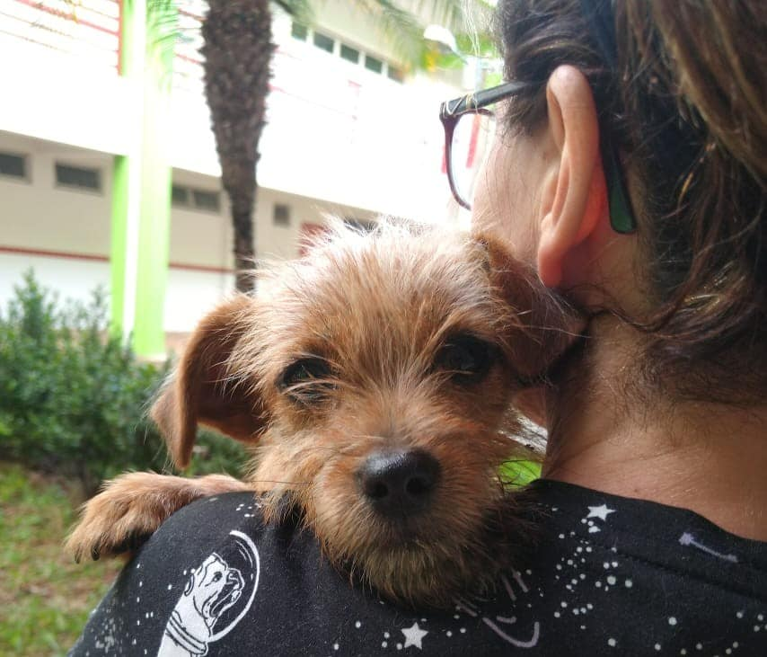
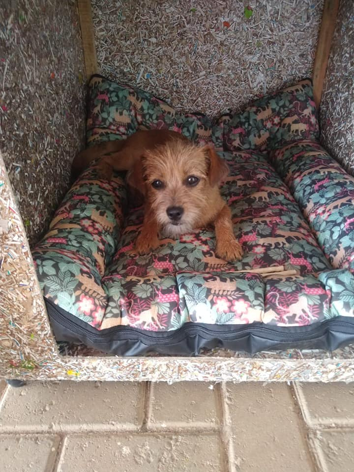
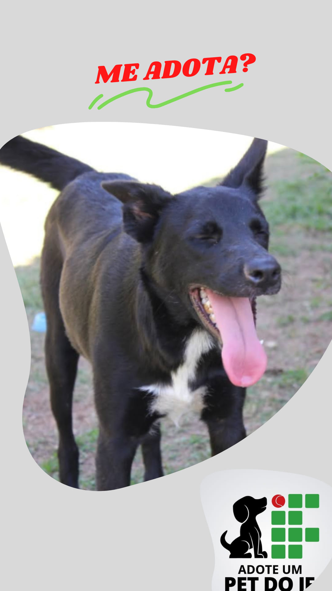
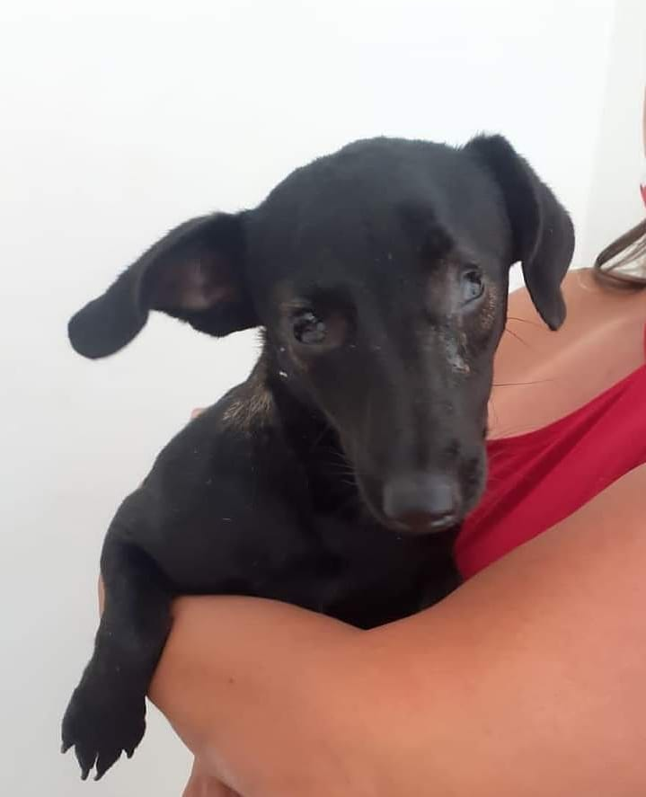
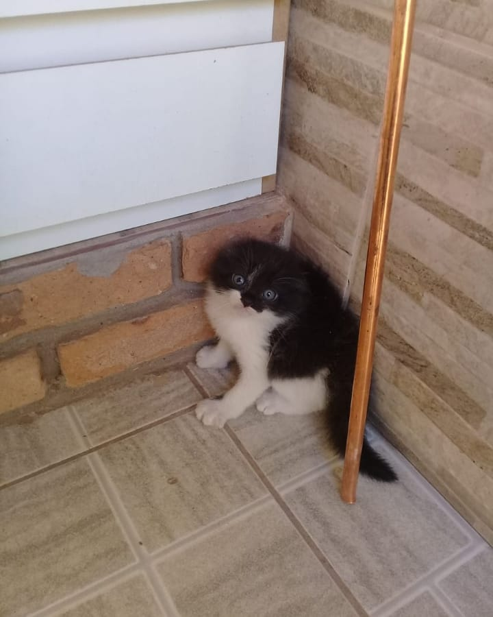

Escolha seu Pet
-

Esse é o Caramelo! Ele é um cachorro da raça “vira-lata”. Ele foi abandonado pelo seu dono na rodovia e começou a frequentar o nosso campus. Então o acolhemos e o encaminhamos para a adoção. Hoje o Jon está em busca de um lar. Ele é extremamente dócil e companheiro e será o seu amiguinho para todas as horas.
Quero adotar! -

Esse é o Spyke! Ele é um cachorrinho da raça "vira-lata peludo" que encontramos perdido e amedrontado no nosso campus. Acolhemos e encaminhamos para a adoção. Ele está em busca de um lar. Gostaria de conhece-lo melhor? conheça o nosso projeto nas redes sociais.
Quero adotar! -

Essa é a Dalila! Ela é um filhote da raça “vira-lata peludo” e precisa urgente de uma lar. Foi abondonada na rodovia ainda filhote e foi resgatada por alunos e entregue a adoção. Ela é extremamente dócil e companheira e será o sua amiguinha para todas as horas.
Quero adotar! -

Esse é o Negão! Ele é um cachorro da raça “vira-lata” e se encontra cego devido a mals tratos sofridos pelo seu atigo dono. Chegou ate nosso campus seguindo os alunos pela rodovia e o entregamos para a adoção. Negão precisa de um lar que possa oferecer muito carinho e atenção e ele irá retribuir isso.
Quero adotar! -

Esse é o Aladdin! Se você procura um amiguinho especial, o Aladdin é a escolha certa pra você. Ele sofreu maus tratos antes de ser abandonado e fica vagando pelo campus sem a visão completa. Ajude-nos a achar um lar para o Aladdin.
Quero adotar! -

Essa é a Dama! Ela é uma gatinha muito dócil e linda. Ela chegou até nós quando um aluno a encontrou na beira mato próximo ao campus bastante assustada. A Dama foi encaminhada para a adoção e espera por um lar
Quero adotar!